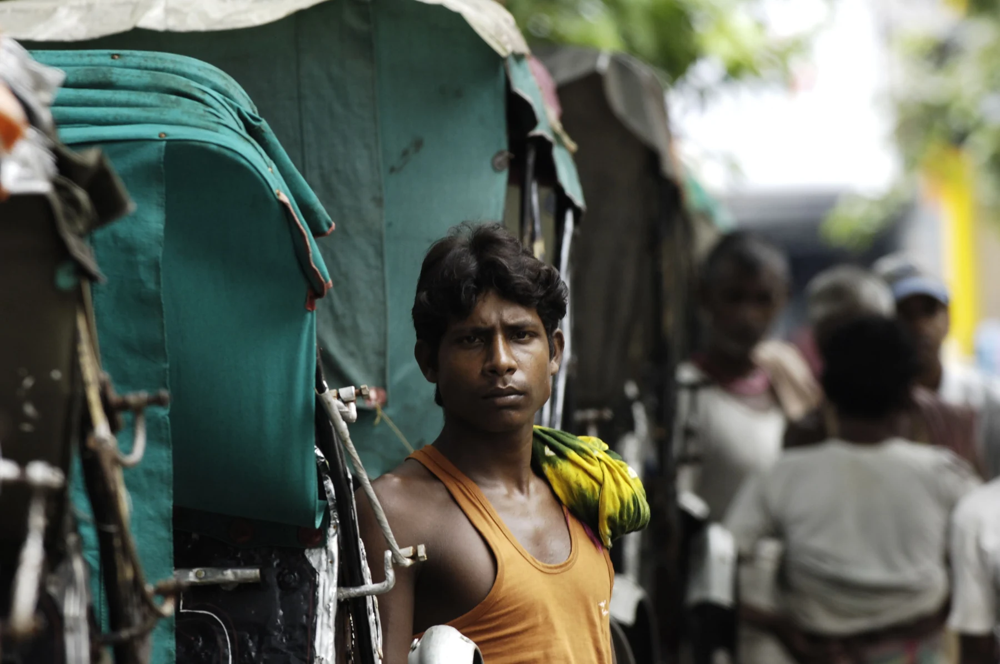
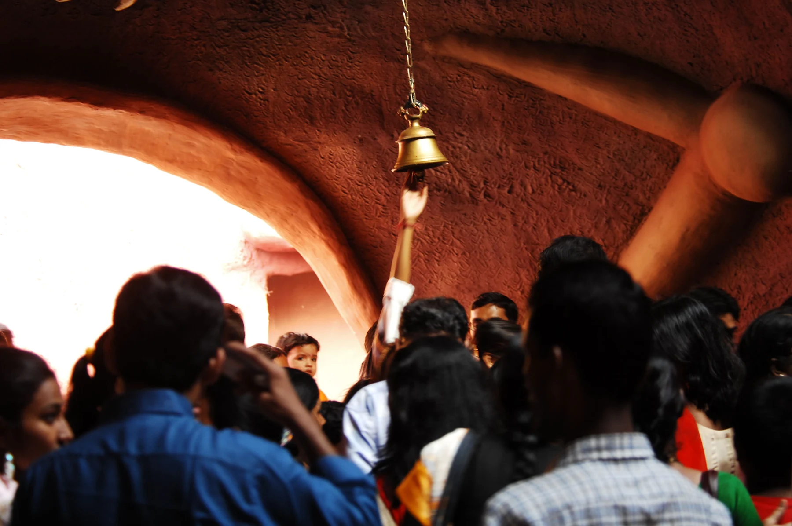
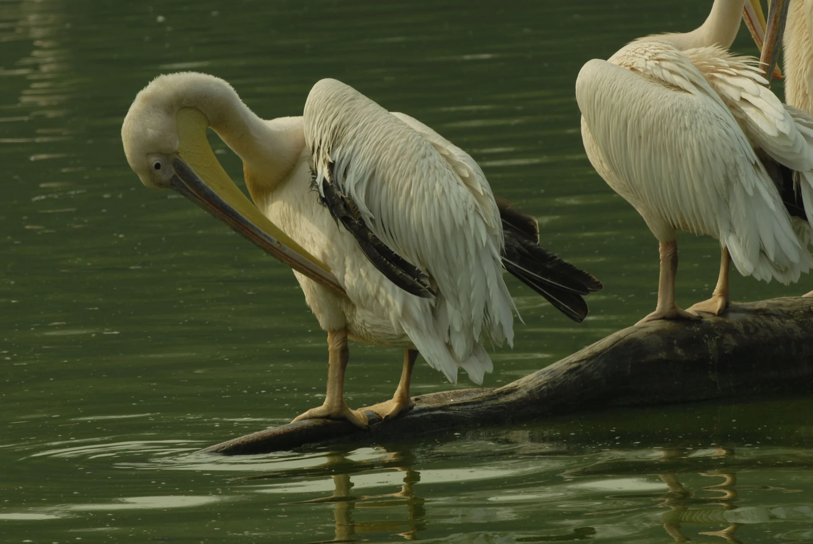
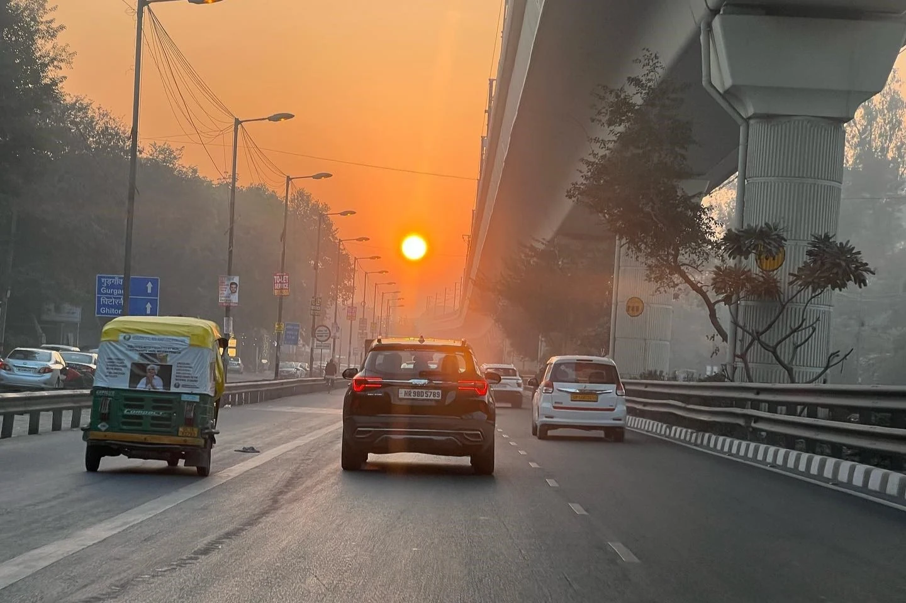

THE WAY
HE SAW.
Six ways into a lifetime of looking. Each collection is an invitation to slow down and notice something new.
06 COLLECTIONS31 PHOTOGRAPHS

/01The human connection
People
09 photographsView collection ↗
 /02
/02
The extraordinary ordinary
Everyday life
09 photographsView collection ↗

/03Where time leaves a trace
Heritage
07 photographsView collection ↗

/04A quieter rhythm
Nature
02 photographsView collection ↗

/05Another hour, another city
City light
02 photographsView collection ↗
 /06
/06
A world alongside ours
Wildlife
02 photographsView collection ↗
Take the
long way.
Browse every photograph together. Search for a detail, move between themes, or simply let one frame lead to the next.
Enter the full archiveBEYOND THE GALLERY
Give a photograph
Give a photograph
a little more time.
The collections group the images by subject. The stories follow a line through them: city rhythms, human gestures, the texture of heritage, water, light and the act of looking.
Discover the visual essays